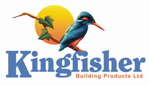

Trade Mark Journal No.2025/025 20 June 2025
UK00004179819 26 March 2025 (1,2,17)

- Class 1
- Chemicals for use in removing paint; Coating compositions [chemicals], other than paint; Coating agents [chemicals], other than paint; Waterproofing compounds [other than paint]; Chemical additives for paint; Sealants [chemicals] for the sealing of surfaces; Weatherproofing coatings [chemical, other than paints] for concrete; Weatherproofing coatings [chemical, other than paints] for masonry; Sealant mastics for use in industry; Waterproof coatings [chemical, other than paints]; Moisture repellant coatings [other than paints]; Chemical additives for paints and surface coatings; Protective coatings for buildings [other than paints or oils].
- Class 2
- Paint; Stains as paint; Exterior paint; Paint thinners; Interior paint; Paint sealers; Paint products [other than paint boxes for use in school]; Paint primers; Wall coatings [paint]; House paint; Varnish paints; Paints; Exterior paints; Interior paints; Decorating paints; Solvent free paint; Paint for concrete floors; Primers in the nature of paint; Acrylic coatings [paints]; Coatings [paints]; Wood coatings [paints]; Coatings for wood as paints; Coatings in the nature of paint for use on wood; Interior decorative finish coatings [paints]; Waterproofing compounds [paint]; Sealants [paints]; Weatherproofing coatings [paints]; Water sealant preparations [paints]; Coatings for the finishing masonry [paints or oils]; Weatherproofing coatings [paints] for concrete; Weatherproofing coatings [paints] for masonry; Waterproof coatings [paints]; Interior protective finish coatings [paints]; Coatings to protect concrete from water [paints or oils]; Concrete sealers [paints]; Sealing preparations for floors [paint]; Waterproof coatings [chemical, paints]; Products for sealing brickwork [paints]; Epoxy coatings; Textured coatings [paints]; Epoxy resins for use in covering walls [coatings]; Preservatives for cement [paints]; Preservatives (cement -) [paints]; Products for sealing concrete [paints]; Moisture repellant coatings [paints]; Bactericidal coatings [paints]; Damp-proofing paints; Roofing compounds [paints]; Sealing preparations [paint]; Coatings to protect stone from water [paints or oils].
- Class 17
- Adhesive sealants; Adhesive sealants for use in roofing; Silicone sealants; Waterproof sealants.
Kingfisher Building Products Ltd